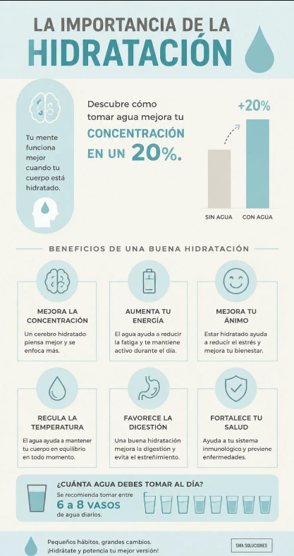
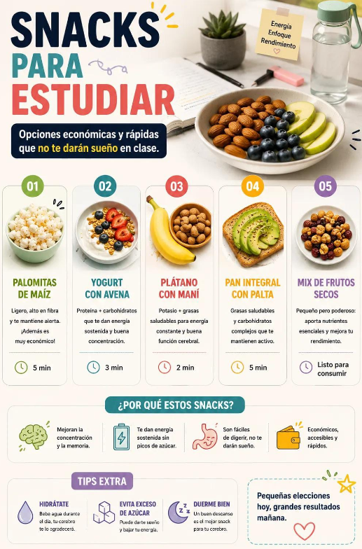
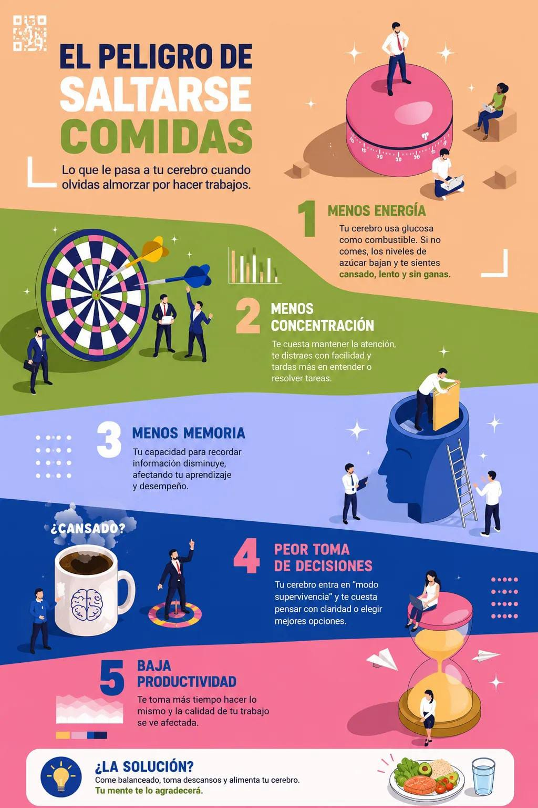

Regístrate, realiza tu evaluación diaria y accede a nuestros recursos para mejorar tu rendimiento académico.
Responde 5 preguntas rápidas y confidenciales sobre tus comidas de hoy y tu nivel de energía.
Verificamos si estás omitiendo comidas o si necesitas apoyo inmediato para rendir en tus clases.
Si lo necesitas, te entregaremos agua, fruta y frutos secos para asegurar tu energía durante el día.
Explora nuestros trípticos e infografías diseñados para ayudarte a tomar mejores decisiones en tu día a día.

Descubre cómo tomar agua mejora tu concentración en un 20%.

Opciones económicas y rápidas que no te darán sueño en clase.

Lo que le pasa a tu cerebro cuando olvidas almorzar por hacer trabajos.